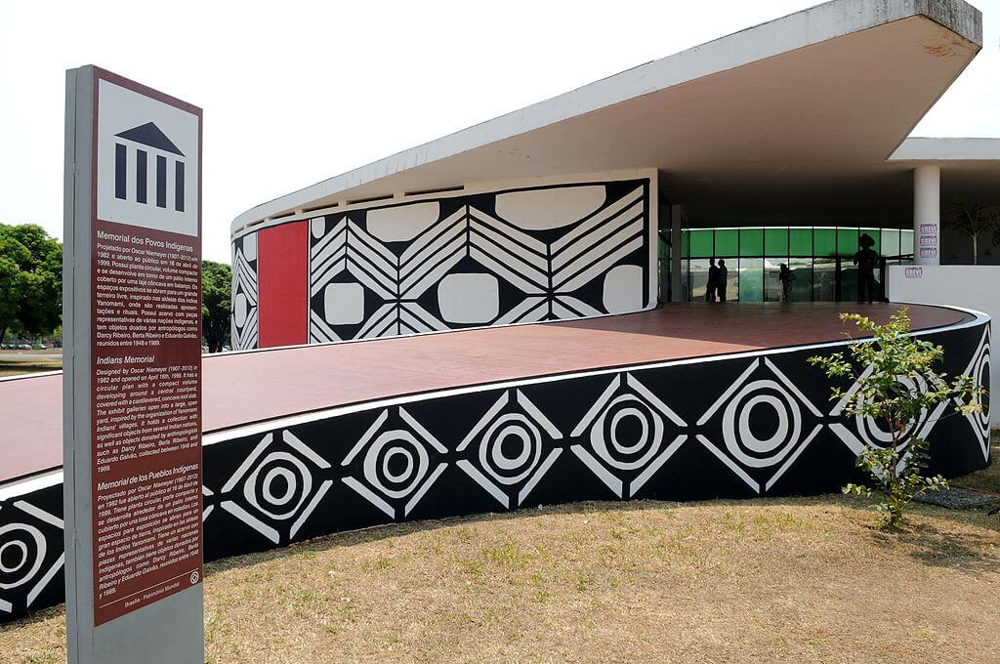

Memorial dos Povos Indígenas
Localização: Brasília - DF

Culturas indígenas
O Memorial dos Povos Indígenas é um espaço dedicado à valorização das culturas e histórias dos povos indígenas do Brasil, com exposições e atividades culturais. Verifique a programação antes da visita.